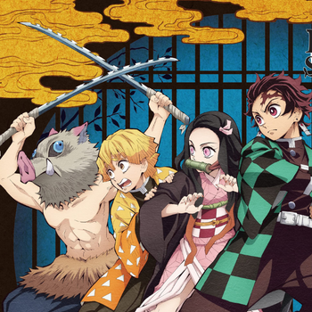
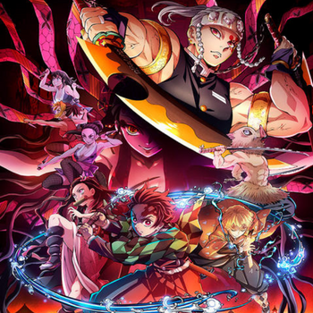
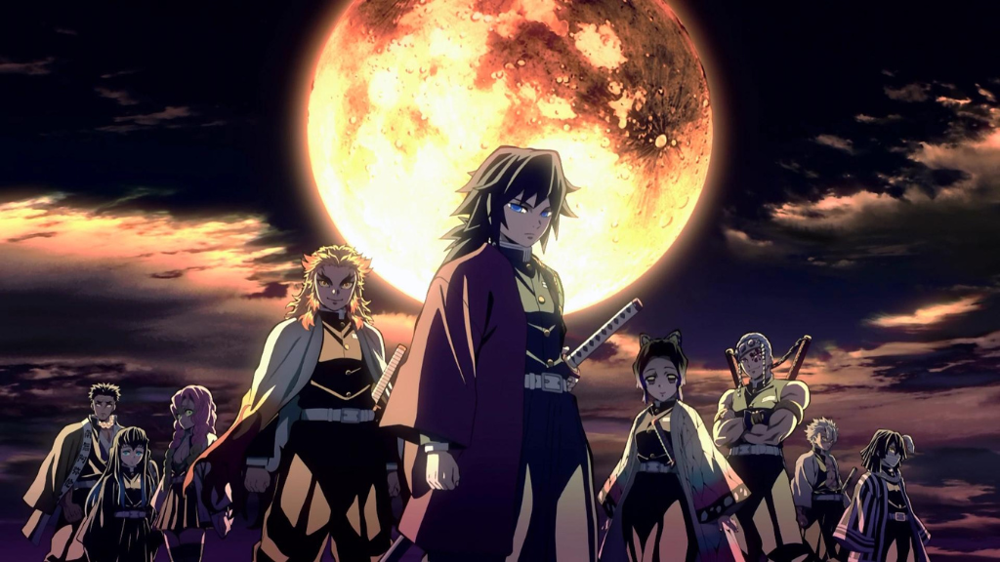
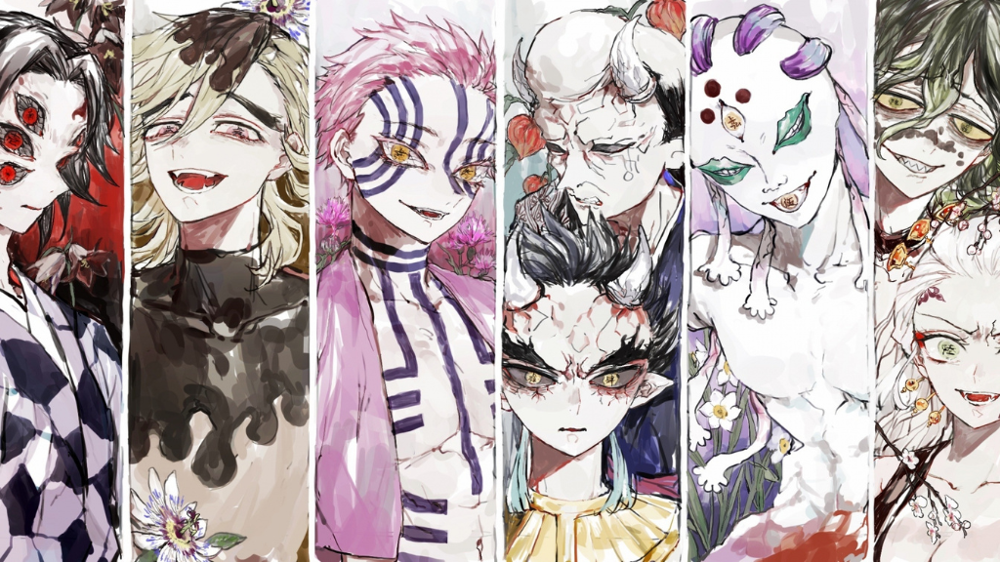

The story is set in a fictional version of Japan, where demons roam the earth and terrorize humanity.
The main character, Tanjiro Kamado, is a young boy who lives with his family in a remote mountain village.
One day, while he is away from home, demons attack his village and slaughter his family, leaving only his younger
sister, Nezuko, alive . However, Nezuko has been turned into a demon by one of the attackers,and Tanjiro vows to
find a way to turn her back into a human and avenge his family's deaths. He becomes a demon slayer and sets out on
a dangerous journey to fight and kill demons. Along the way, Tanjiro meets other demon slayers, including Zenitsu
and Inosuke, who join him on his quest. They face off against a variety of demons, some of whom have unique abilities
and are more powerful than others. As the story progresses, the demon slayers become embroiled in a larger conflict
involving the powerful demon Muzan Kibutsuji, who is responsible for creating many of the demons they face. They must
uncover the secrets of Muzan's origins and find a way to defeat him, while also facing their own personal struggles
and relationships with one another.The story of Demon Slayer is an epic tale of adventure, friendship, and tragedy,
with themes of loss, sacrifice,and the struggle between good and evil. It is known for its captivating characters,
stunning animation, and intense action sequences, and has become a beloved and highly popular anime and manga series
around the world.
In this blog we are going to cover the following toppics about Demon Slayer:
Season 1
Season 2
The Hashira
The Demons (Oni)
Season 1

The story takes place in Japan during the Taisho period (1912-1926) and follows a young boy named Tanjiro Kamado, who
lives with his family in a small village. One day, while he is away from home, demons attack his village and kill his
family, leaving only his younger sister, Nezuko, as the sole survivor. However, the attack has turned Nezuko into a demon,
though she still has some human emotions and memories.
Determined to turn his sister back into a human, Tanjiro joins the Demon Slayer Corps, an organization of demon hunters
who specialize in killing demons and protecting humanity. He trains under a skilled swordsman named Sakonji Urokodaki and
learns various combat techniques and breathing styles that enhance his strength and agility.
As Tanjiro and his comrades travel across Japan to eliminate demons and find a cure for Nezuko's condition, they encounter
various other demon slayers, each with their own unique abilities and personalities. They also face off against a number of
powerful demons, including Muzan Kibutsuji, the progenitor of all demons, who seeks to destroy the Demon Slayer Corps and
rule the world.
Throughout the first season, Tanjiro's love and determination to save his sister, as well as the strong bonds he forms with his
comrades, drive the story forward. With his sword, Nichirin Blade, and the power of his breathing techniques, Tanjiro fights to
protect humanity and ultimately finds a way to restore Nezuko to her human form. The season ends with Tanjiro and his friends
embarking on a new mission to take down even more powerful demons and protect those they hold dear.
Click here to know more about season 1
Season 2

The three Demon Slayers arrive in the district and are immediately overwhelmed by its opulence and decadence. They meet
Tengen Uzui, one of the Hashira, who is also investigating the disappearances. Tengen assigns the Demon Slayers to go
undercover as courtesans and gather information from the district's wealthy clientele.
Tanjiro, Inosuke, and Zenitsu go through a rigorous training program to become courtesans, and after several failed attempts,
they are finally able to secure clients. As they investigate, they discover that the disappearances are linked to a powerful
demon who is able to control people's minds and turn them into his loyal servants.
The demon, named Daki, is one of the Twelve Kizuki, a group of the most powerful demons in existence who are directly under
the control of Muzan Kibutsuji, the main antagonist of the series. Daki's brother, Gyutaro, is also a member of the Twelve
Kizuki and is working with her to eliminate any threats to their existence.
Tanjiro and the others eventually confront Daki and Gyutaro, and a fierce battle ensues. Despite their best efforts, Tanjiro
and his friends are initially unable to defeat the two demons. However, with the help of Tengen and his team, they are able to
gain the upper hand and eventually emerge victorious.After their mission is complete, Tanjiro and his friends return to the
Demon Slayer Corps headquarters, where they continue to train and prepare for their next mission.
Click here to know more about season 2
The harshira

In the anime and manga series "Demon Slayer: Kimetsu no Yaiba," the Hashira are a group of elite and powerful Demon Slayers who are widely
recognized as the strongest warriors within the Demon Slayer Corps. They are also referred to as the "Pillars" in the English version of
the series. Each Hashira is assigned to oversee and lead a different branch of the Demon Slayer Corps and directly reports to the leader
of the Corps, Kagaya Ubuyashiki. Along with their exceptional combat skills, the Hashira are known for their remarkable physical abilities,
as well as their distinct personalities and quirks.
The Hashira are highly respected by both the Demon Slayer Corps and the general public, and their efforts are vital in the ongoing fight
against the demons. Throughout the series, they are portrayed as skilled and powerful fighters, but they also face their own personal struggles
and imperfections. Despite their differences, the Hashira work together to protect humanity from the demon threat, and their contributions are
crucial to the success of the Demon Slayer Corps.
Ranking
Hashira
Title
1
Giyu Tomioka
Water Hashira
2
Sanemi Shinazugawa
Wind Hashira
3
Kyojuro Rengoku
Flame Hashira
4
Tengen Uzui
Sound Hashira
5
Mitsuri Kanroji
Love Hashira
6
Obanai Iguro
Serpent Hashira
7
Gyomei Himejima
Stone Hashira
8
Muichiro Tokito
Mist Hashira
9
Shinobu Kocho
Insect Hashira
The Demons

In the world of "Demon Slayer," demons are created through the consumption of human flesh by other demons. As a result, most demons have a strong
desire to consume human flesh in order to maintain their strength and continue to evolve. Each demon has unique abilities and strengths, often tied
to their origin story and the circumstances surrounding their transformation. Some demons possess superhuman strength, speed, or agility, while others
have powers such as controlling fire, water, or other elements.
The demons in "Demon Slayer" are typically portrayed as being difficult to defeat, as they are able to regenerate their bodies and are often immune
to conventional weapons. The only way to kill a demon is to use a special type of sword known as a "Nichirin Blade," which is made from a unique
metal alloy and is capable of severing a demon's head in a single strike.
The series' protagonist, Tanjiro Kamado, is a demon slayer who seeks to rid the world of demons and save his younger sister, Nezuko, who has been
turned into a demon herself. Tanjiro, along with his friends and fellow demon slayers, battles various demons throughout the series, each with their
own unique powers and weaknesses. Overall, the demons in "Demon Slayer" are a major driving force in the series, providing formidable opponents for
the characters and adding to the show's dark and supernatural atmosphere.
Related Content
Demon Slayer: Kimetsu no Yaiba -To the Swordsmith Village- | UPPER RANK DEMON TRAILER
Demon Slayer is a truly epic anime that will leave you on the edge of your seat. With unforgettable characters, breathtaking animation, and a
thrilling story that will keep you guessing until the very end, this is a series that you won't want to miss. Whether you're a fan of action,
adventure, or just great storytelling, Demon Slayer has something for everyone. So why wait? Dive into the world of demons and demon slayers
today and experience the magic for yourself. Whether you prefer the anime or the manga, this is a series that will keep you hooked from start
to finish. Join Tanjiro and his friends on their quest to defeat the demons and save the world, and prepare for an adventure that you'll never
forget!
Thank you for taking the time to read our blog!